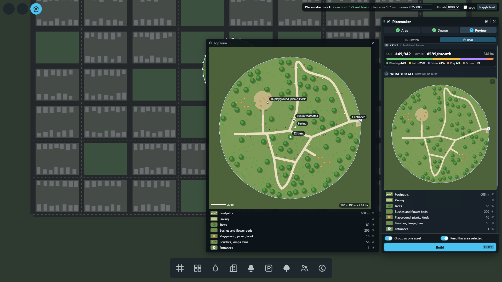

Car park: the sketch (map)

with the top view in the panel
Car park: Real preview

the asphalt now shows under the real trees
Car park: built

what the game built
Park in a T shape (Design)

top view beside the panel while you design
Round park

Triangle car park

Road grid (Review)

Strip mall: shops grow on the blue plots

Top view, large (click it)

notes: counts where things are